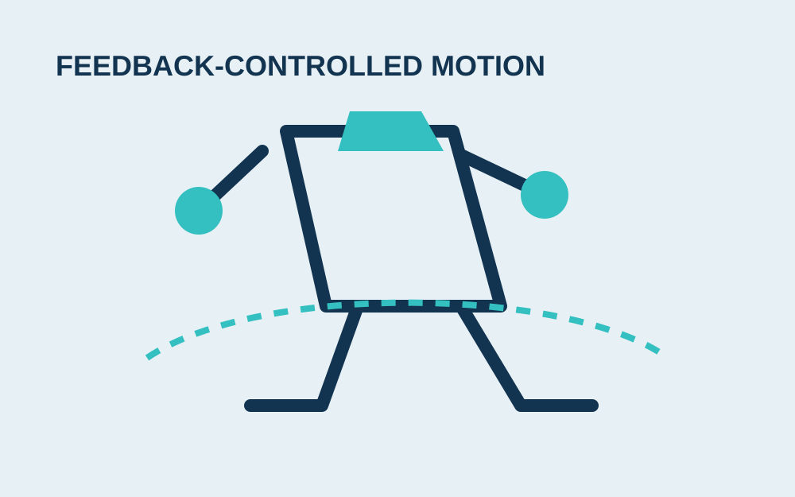

Research project
Flight Simulator Chair
Designed an IMU-based feedback system for a pneumatic simulator chair, integrating PID control, current-control electronics, and custom fixtures.
PID controlArduinoIMUPneumatics
Project overview
This project focused on the feedback control of a pneumatically actuated flight simulator chair. The work connected motion sensing, electronics, software, and mechanical fixtures into a chair-control system.
My contributions
- Designed an IMU-based Arduino control system for the chair.
- Designed a constant-voltage, variable-current control circuit.
- Programmed a PID algorithm to regulate flow rate and chair rotation speed.
- Designed and 3D-printed fixtures for pneumatic cylinders, circuits, and supporting components.
Technical approach
The control system uses IMU measurements as feedback. A PID algorithm regulates the pneumatic flow to adjust the chair rotation speed, supported by a variable-current circuit and custom mechanical fixtures.
Images & documentation

Project video
Project videoExperiment and demonstration footage will be added here.